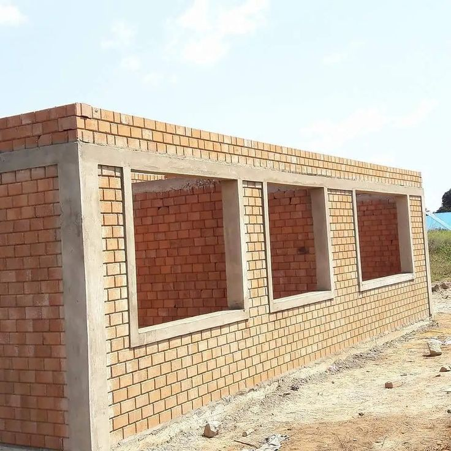
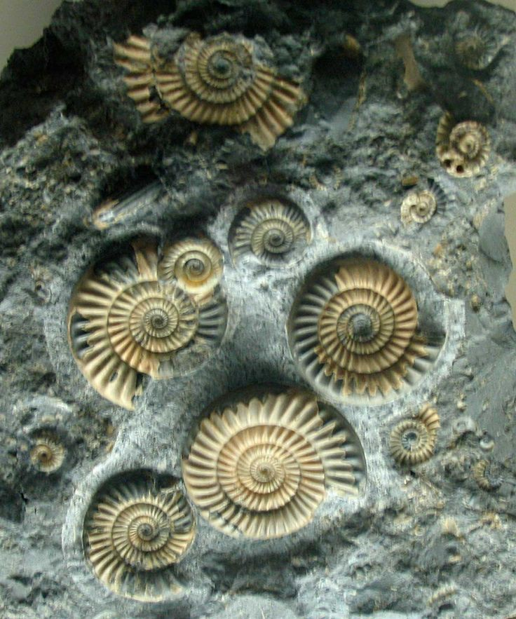

This photo is from pngtree
 This photo is from Gardening know How |
3. Soil Creation:
Over time, rocks break down and become part of the soil. This soil is essential for plants to grow, which supports all life on Earth. |
| 4. Building Blocks:
Rocks are used as strong, durable materials to construct buildings, roads, and other structures that are important for human civilization. Rocks help those structures to be stable and strong. |
This photo is from HPD consult |
 This photo is from Jason Bray
|
5. Fossils:
Rocks can contain the preserved remains of ancient plants and animals, called fossils. Studying these fossils helps us understand how life has evolved on Earth over millions of years. |
Go back to home